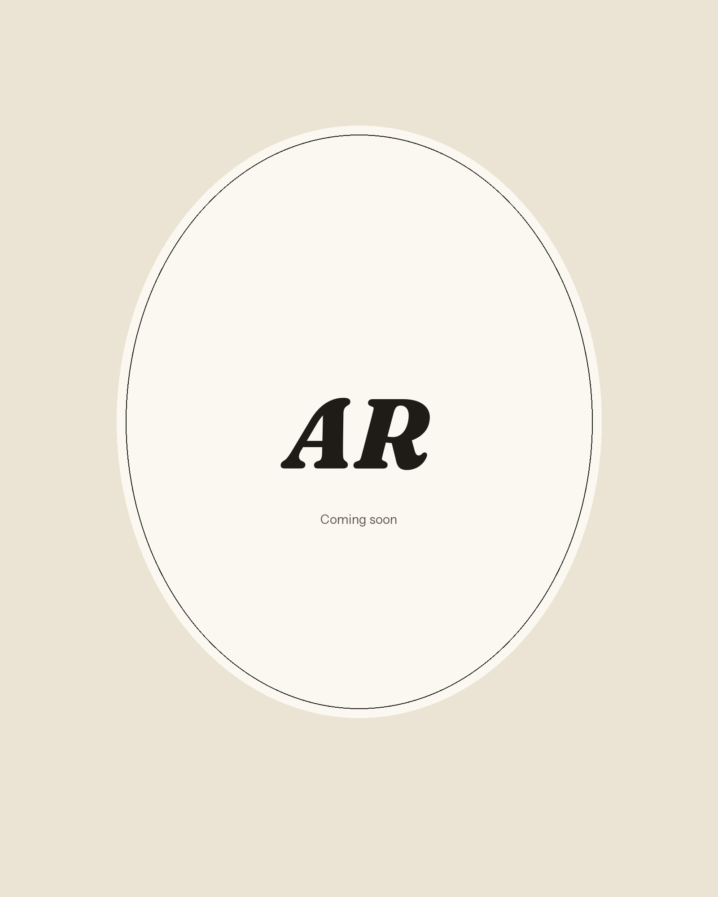
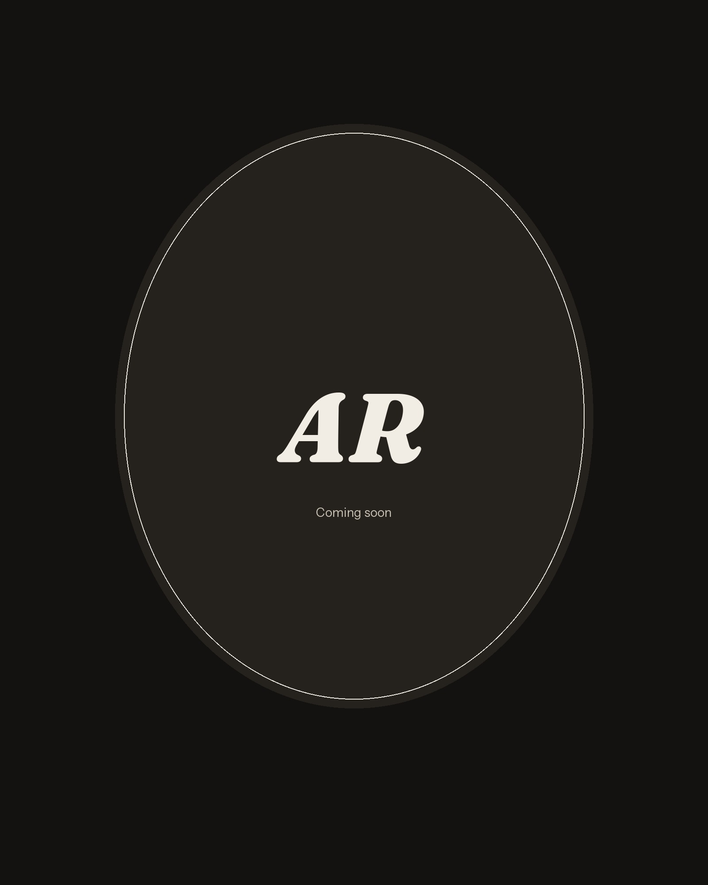

About
About
I am an MSc student in AI for Business Transformation at H-FARM College in Roncade, Italy. The degree is awarded by the University of Chichester: 90 ECTS, taught in English, from September 2026 to July 2027.
I build working AI-enabled software, and I am working towards roles in Forward Deployed Engineering — and towards AI and software engineering internships more broadly.
This year I have been making Lyceum, a native macOS app, and I took part in H-ACK Audi.
I previously completed a BSc in Mechanical Engineering at the Politecnico di Bari, in 2025.
Italian is my first language, and I also work in English.
Tools and practice
What I work with
- In Lyceum. Swift and SwiftUI; on-device speech-to-text with Whisper and MLX; multi-provider LLM integration, including local models through Ollama; and DOCX generation from several sources.
- From the first term of the MSc, at course and academic-project level. Python for data analysis (including Pandas and NumPy); SQL, ETL, relational databases and data warehousing; large language models, RAG and agentic systems; and digital transformation strategy.
- Also. Prompt engineering; Git and Xcode; HTML, CSS and JavaScript at a basic level.